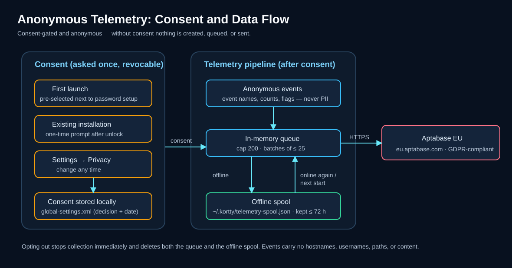
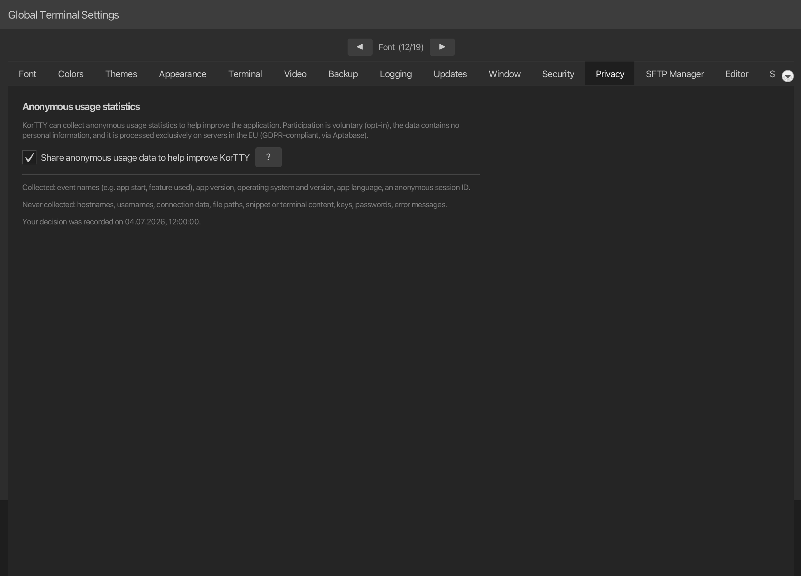

Anonymous data for application optimization¶
korTTY can collect anonymous usage statistics to help decide which features are worth improving and to find crashes and frequent errors. This is entirely optional and can be turned on or off at any time. On a first launch the checkbox in the master-password setup comes pre-selected, so confirming that dialog as-is starts collection — clear it there, or switch it off later, and nothing is collected.

Overview¶
- Your decision, once. Nothing is collected before you confirm. You are asked once, together with the master-password setup on first launch, where the checkbox is pre-selected; existing installations are asked once after unlocking, with a dialog that counts every dismissal as "no".
- Anonymous. No account, no login, and no persistent device identifier is transmitted.
- Revocable. You can change your decision at any time under Settings → Privacy. Turning it off stops collection immediately and discards any data that has not yet been sent.
What is collected¶
| Data | Example |
|---|---|
| Event names | app start, feature used (e.g. a tool opened, a backup created) |
| Aggregate counts and flags | number of open terminal tabs, whether AI is enabled |
| App version | 2.5.1 |
| Operating system and version | macOS 15, Windows 11, Linux |
| App language | de, en |
| An anonymous session ID | a random number regenerated on every launch and after one hour of inactivity |
The session ID is not a persistent identifier: it is newly generated each time and cannot be traced back to you across launches.
What is never collected¶
korTTY never transmits any of the following:
- Hostnames, IP addresses, usernames, or connection names and addresses
- File names, paths, or directory contents
- Snippet content, terminal output, or AI prompt and chat text
- Passwords, SSH keys, GPG keys, or API keys
- Error messages (only the type of error and the korTTY class where it occurred)
Where the data goes¶
Usage statistics are processed by Aptabase, an open-source, privacy-first analytics service. korTTY uses Aptabase's EU region (eu.aptabase.com), so the data is processed on servers located in the European Union in compliance with the GDPR. See the Aptabase privacy policy for details.
If no connection is available, events are cached locally in ~/.kortty and sent later — including after a restart — so a temporary lack of connectivity does not lose or block anything. This offline cache holds only the same anonymous events; it is discarded if you opt out, and events older than three days are dropped.
Why korTTY collects it¶
The goal is to make korTTY better with real, anonymous evidence instead of guesswork:
- Prioritize features that people actually use, and retire ones that nobody does.
- Find crashes and frequent errors so they can be fixed in the next release.
- Measure whether releases improve stability over time.
Your choices¶
- First launch: the setup dialog for the master password includes the pre-selected checkbox and this information; clearing it before you click Setup declines.
- Any time: open Settings → Privacy to enable or disable collection. The same page links back to this chapter.
- Turning it off stops all collection immediately and discards data that has not yet been sent.

Your consent record¶
Your decision and the date it was made are stored locally in ~/.kortty/global-settings.xml (see Configuration files) as a record of consent. If a future korTTY version changes what is collected, you will be asked again so your choice always reflects the current scope.